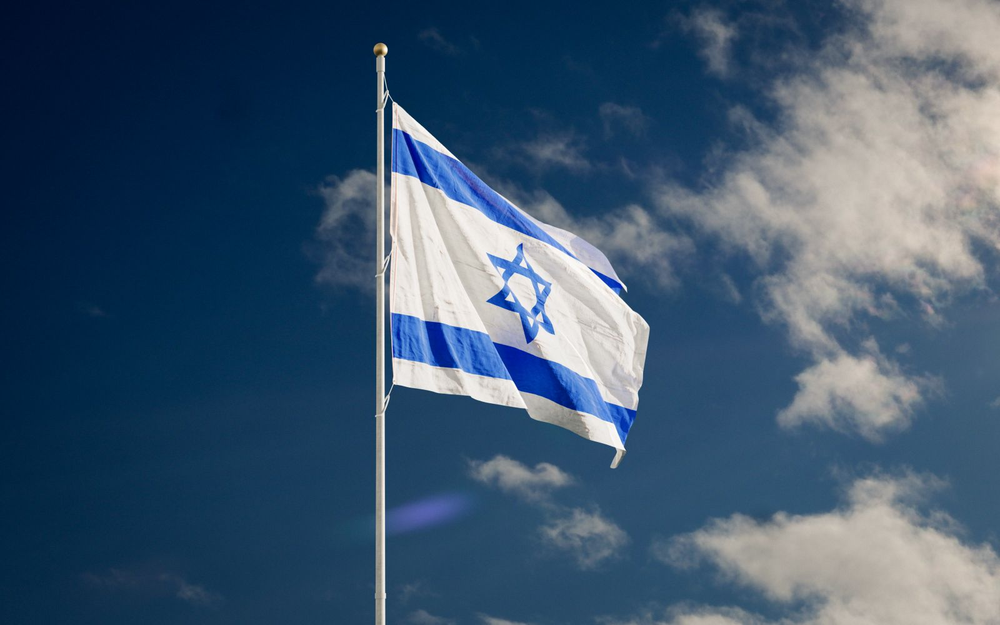
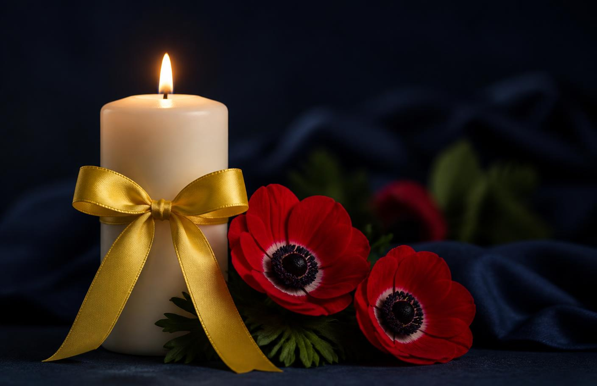

נר של מעשה
כל קריאה שאנו עונים לה נרשמת בליבנו כנר זיכרון – חסד שממשיך את מה שנקטע.

בשבת השחורה נקטעו חיים שלמים. ארגון מלאכים בדרכים הוקם מתוך הכאב הזה, כדי להפוך את הזיכרון למעשה: יד מושטת לכל נהג בצד הדרך, בכל שעה, בכל מקום.
„כל המציל נפש אחת מישראל – כאילו קיים עולם מלא"
אנחנו רואים חובה מוסרית להעלות על נס את זכרם של אותם אנשים שנקטפו מאיתנו בטרם עת, ולהמשיך להילחם לאחדות ולחסד בעם. לא בהצהרות – בעשייה.
כל מתנדב שיוצא בלילה לכביש חשוך, כל גלגל שמוחלף בגשם, כל דלת שנפתחת כדי לחלץ ילד – כל אלה הם המשך של אור שניסו לכבות.

כל קריאה שאנו עונים לה נרשמת בליבנו כנר זיכרון – חסד שממשיך את מה שנקטע.
מפגשי זיכרון, שירה ולימוד יחד עם משפחות ועם קהילות בכל הארץ.
הרצאות בטיחות בדרכים בבתי ספר ובמקומות עבודה, לזכר הנרצחים.
כל קריאת סיוע שנענית היום היא המשך ישיר של אותו אור – זיכרון שהופך למעשה, שוב ושוב.
רגע קטן של זיכרון, מכל מקום שבו אתם נמצאים.
הנר נשמר בדפדפן שלכם, וידלוק גם כשתחזרו לבקר.
מוקד חירום ארצי, מתנדבים בכל אזור בארץ, מענה מיידי – והכול בהתנדבות מלאה וללא עלות.